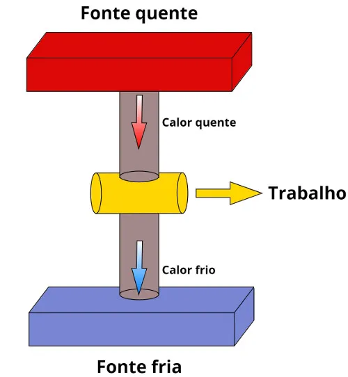

Máquinas térmicas são dispositivos capazes de transformar energia térmica em trabalho mecânico. Toda máquina térmica necessita de uma fonte de calor e de uma substância de trabalho capaz de ter o seu volume modificado e, consequentemente, movimentar algum mecanismo, como válvulas ou pistões.
Todas as máquinas térmicas operam de acordo com um ciclo termodinâmico, isto é, sequências de estados termodinâmicos que se repetem. Esses ciclos apresentam diferentes estados de volume, pressão e temperatura, que são geralmente representados por gráficos de pressão em função do volume. Os ciclos termodinâmicos são projetados em busca da maior eficiência energética, ou seja, busca-se sempre a produção de motores capazes de extrair uma grande quantidade de trabalho.
Motores de combustão interna, motores movidos a gasolina, álcool, diesel, GLP e querosene, máquinas movidas a vapor como: locomotivas, máquinas de tecer e usinas termelétricas, refrigeradores ...
O rendimento de qualquer máquina térmica pode ser calculado como a razão do trabalho mecânico que ela produz pela quantidade de calor que ela absorve de alguma fonte quente:
η = τ /Qq
η – Rendimento, τ – Trabalho mecânico (J – joules ou cal - calorias), Qq – Calor proveniente da fonte quente (J – joules ou cal).
O trabalho mecânico, por sua vez, é determinado pela diferença entre as quantidades de calor “quente” e “frio”, portanto, podemos escrever o rendimento das máquinas térmicas por meio dessas quantidades:
η = 1 - QF/QQ
QF – calor cedido para a fonte fria.
Buscando determinar qual seriam as características do ciclo termodinâmico “perfeito”, o físico francês Sadi Carnot desenvolveu um ciclo que, ao menos teoricamente, apresenta a maior eficiência possível para uma máquina térmica que opere nas mesmas temperaturas.
Esse ciclo, conhecido como o ciclo de Carnot, popularmente chamado de máquina de Carnot, não é uma máquina real, visto que até, os dias atuais, impossibilidades técnicas e práticas impediram a construção de tal máquina."
